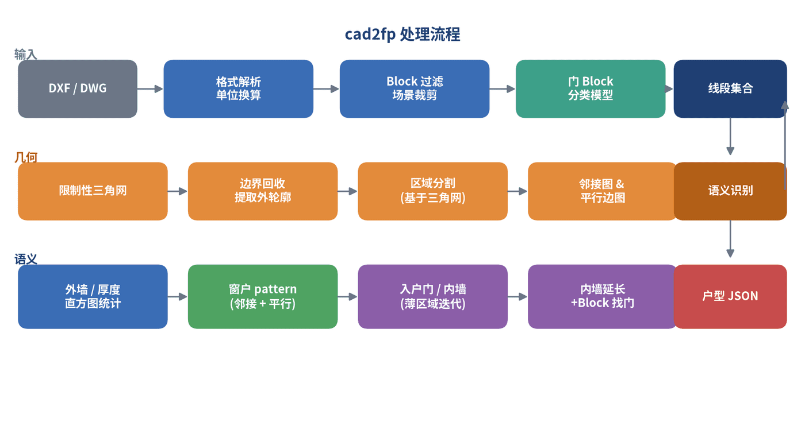
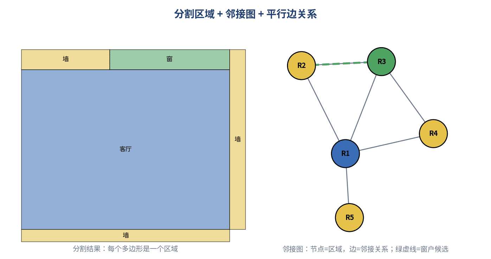
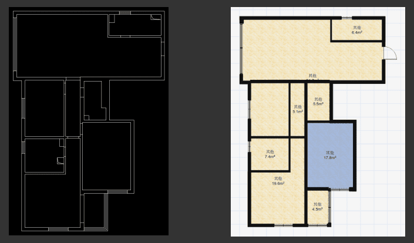
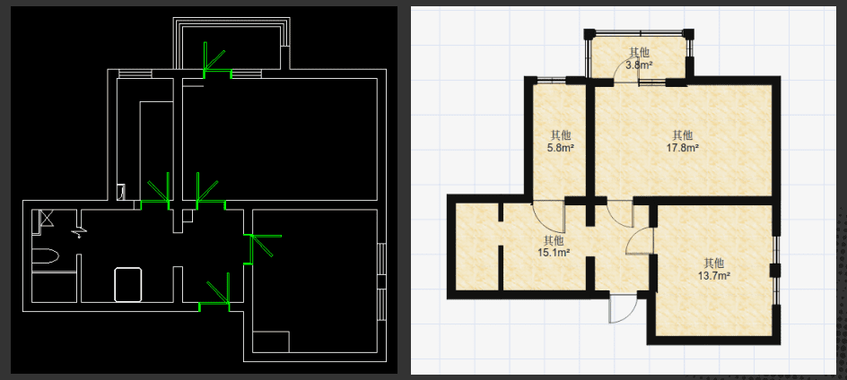
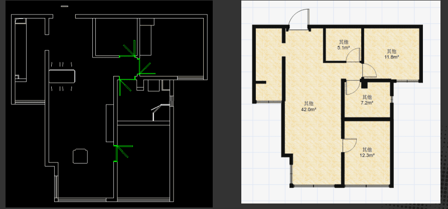
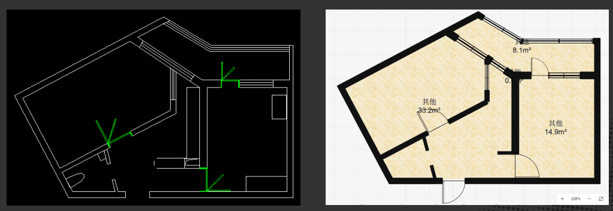

Turning non-standard CAD floorplans into unified structured data.
CAD-to-Floorplan Parsing
An automatic DXF/DWG parsing pipeline that uses existing manually drawn CAD floorplans, resolves inconsistent drawing conventions, and generates a unified floorplan data representation.
Problem
Many existing CAD floorplans were manually drawn without a unified standard. Different files use different layer structures, drawing conventions, line types, block definitions, units, and wall/door/window representations. To make use of this accumulated data, the system needs to parse DXF/DWG drawings automatically and convert them into a consistent floorplan format.
Approach
- Automatically parse DXF/DWG geometry, layers, linework, blocks, and units into a normalized geometric representation.
- Separate indoor and outdoor regions, recover the exterior boundary, and partition the floorplan into room-level regions.
- Recognize walls, windows, doors, door blocks, and furniture/noise using geometry, topology, layer cues, and rule-based inference.
- Generate a unified floorplan data structure suitable for downstream reconstruction, measurement, editing, and product workflows.
My Contribution
I personally designed the complete algorithm framework and implemented the full CAD-to-floorplan parsing system from scratch.
The main modules I built include:
- DXF/DWG parsing and normalization across inconsistent CAD conventions
- Automatic layer parsing and geometry cleanup
- Indoor/outdoor classification and room partitioning
- Door, window, and door-block recognition
- Furniture recognition/filtering to reduce drafting noise
- Unified floorplan JSON generation
Outcome
The parser converts inconsistent manually drawn CAD floorplans into unified structured floorplan data without requiring manual layer cleanup or a single fixed drafting standard.





